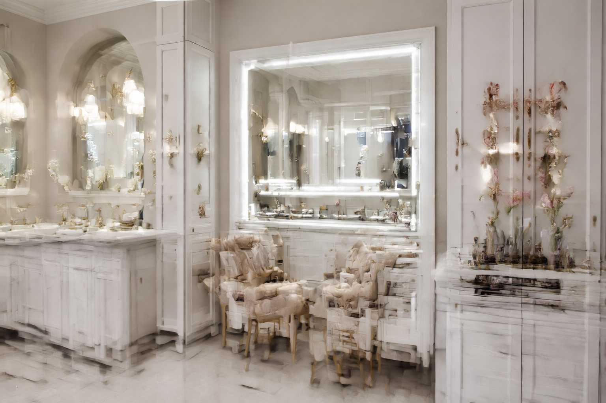
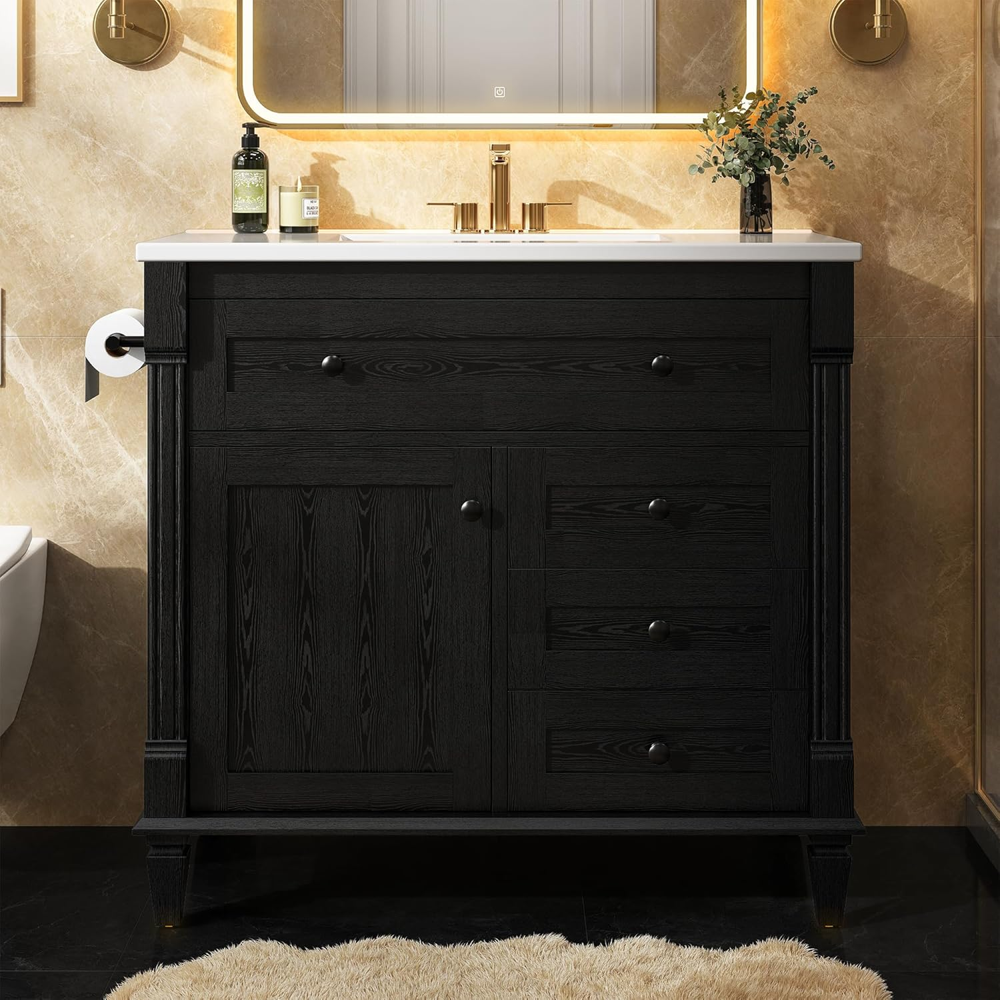

Best Bathroom Vanities with Makeup Area: Sit-Down Styles with Storage (2026)

Home & Bathroom Expert | Reviewing vanities and bathroom furniture since 2024
This article contains affiliate links. If you purchase through these links, we may earn a small commission at no extra cost to you. Full disclosure.
Quick Answer: Best Vanity with Makeup Area?
The DELUXE LIVING 48" Steel Blue Vanity ($1,059.99) is our top pick for makeup stations. Its 48-inch quartz countertop provides generous sit-down space beside the sink, with soft-close dovetail drawers perfect for organizing cosmetics. For a budget-friendly option, the LIKIMIO 36" Modern Vanity ($287.99) offers surprising counter space and an open shelf layout ideal for daily beauty routines.

A dedicated makeup area in your bathroom transforms your morning routine from a cramped, rushed experience into something you actually enjoy. Instead of hunching over a tiny sink to apply foundation, you sit comfortably at counter height with everything organized in reach.
The key to a great bathroom vanity with makeup space is width, storage, and countertop quality. You need at least 36 inches of counter to carve out a usable grooming zone, and ideally 48 inches or more for a proper sit-down station. Drawer count matters too -- cosmetics, brushes, skincare, and tools add up fast.
We reviewed 20+ vanities and selected 7 that deliver the best combination of countertop space, drawer storage, and build quality for a dual-purpose sink-and-makeup setup. Whether you prefer a modern aesthetic or a floating design, every pick here gives you room to sit, organize, and groom comfortably.
Our picks range from $287.99 to $1,115.00, covering everything from budget-friendly 36-inch vanities to premium 60-inch double-sink models with dedicated makeup zones. All feature soft-close mechanisms and stain-resistant countertops -- essential when cosmetic spills are a daily reality.

DELUXE LIVING 48" Steel Blue Vanity
48 inches of quartz countertop with soft-close dovetail drawers. The wide surface gives you a full sit-down makeup zone beside the sink basin.
Check Price on AmazonWhy You Need a Dedicated Makeup Area Vanity
Most bathroom vanities are designed purely for handwashing -- a narrow countertop, a single sink, and minimal storage. That forces you to apply makeup standing up, often in poor lighting, with products scattered across every available surface.
A vanity designed with makeup space in mind solves all of these problems at once:
- Sit-down comfort: Wider counters (36-60") let you place a stool beside the sink for seated grooming
- Dedicated storage: Multiple drawers keep cosmetics organized instead of cluttering the counter
- Better lighting: More counter space means room for a lighted vanity mirror without blocking the sink
- Stain-resistant surfaces: Quartz and ceramic countertops resist foundation, lipstick, and nail polish spills
- Morning efficiency: Everything in one station -- no walking between rooms carrying products
If you are deciding between a single or double sink vanity, consider that a single-sink model in a wider size (48-60") actually gives you more usable counter space for a makeup area than a double-sink model of the same width.
How We Evaluated
We evaluated each vanity specifically for its suitability as a combined sink and makeup station. Our criteria differ from a standard vanity review because makeup area functionality demands specific features:
- Countertop Space (30%): Usable surface area beside the sink for a mirror, products, and elbow room while seated
- Drawer Storage (25%): Number, depth, and organization potential of drawers for cosmetics, brushes, and skincare
- Countertop Material (20%): Stain resistance to cosmetic spills (foundation, lipstick, nail polish) -- quartz scores highest
- Build Quality (15%): Cabinet construction, soft-close mechanisms, and moisture resistance
- Value (10%): Price relative to the makeup-area functionality delivered
Top 7 Bathroom Vanities with Makeup Area
1. DELUXE LIVING 48" Steel Blue Modern Vanity
Best For: Maximum countertop space with premium build quality
Pros
- 48" quartz countertop -- room for full makeup station
- Soft-close dovetail drawers for organized storage
- Stunning steel blue finish
- Stain-proof quartz resists cosmetic spills
Cons
- Premium price point
- Requires 48" wall space minimum
The DELUXE LIVING 48" is our clear winner for makeup-area functionality. The 48-inch quartz countertop gives you a full 18-20 inches of usable space beside the sink basin -- enough for a lighted magnifying mirror, your daily products, and comfortable elbow room while seated on a stool. The dovetail drawers with soft-close action are deep enough for tall cosmetic bottles and wide enough for brush rolls. The steel blue finish adds a sophisticated look that makes your bathroom feel like a luxury dressing room.
Check Price on Amazon

2. ARIEL Cambridge 36" Solid Wood Vanity
Best For: Maximum drawer storage for cosmetic organization
Pros
- 5 dovetail drawers -- best storage in this roundup
- Solid wood construction (not MDF)
- Quartz countertop included
- Soft-close on all drawers and doors
Cons
- Highest price on the list
- 36" limits countertop makeup space
If your priority is keeping every brush, palette, serum, and tool perfectly organized, the ARIEL Cambridge has no equal. Five full dovetail drawers give you dedicated space: one for daily makeup, one for skincare, one for tools and brushes, and two more for backups and seasonal products. The solid wood construction (not MDF) means this vanity handles bathroom humidity for 15+ years without warping. At 36 inches, the counter space beside the sink is modest, but the unmatched storage more than compensates. Pair it with a wall-mounted magnifying mirror above to complete the setup. For more on choosing the right countertop, see our vanity with vs without top guide.
Check Price on Amazon

3. ARIEL Hepburn 36" Carrara White Quartz Vanity
Best For: Luxury countertop quality for daily cosmetic use
Pros
- Carrara White quartz -- stain-proof for makeup spills
- Solid wood frame
- 4.9 rating -- highest in roundup
- Premium soft-close hardware
Cons
- Premium investment at $1,050
- 36" may need supplemental storage
The ARIEL Hepburn earns its 4.9-star rating through meticulous build quality and a Carrara White quartz countertop that belongs in a luxury hotel. This is the countertop surface you want when foundation, concealer, and setting powder are part of your daily routine -- quartz is completely non-porous, so nothing penetrates or stains the surface. Just wipe clean with a damp cloth. The solid wood cabinet resists humidity, and the soft-close drawers are sized right for makeup organizer trays. If you need help with installation, check our bathroom vanity buying guide.
Check Price on Amazon
4. LUXOAK 60" Farmhouse Double Vanity with Drawers
Best For: Couples who need a makeup station plus dual sinks
Pros
- 60" width with center makeup zone
- Sliding barn doors + drawers
- 249 reviews -- most tested
- Under $500 for 60 inches
Cons
- Farmhouse style not for everyone
- Requires large bathroom (60"+ wall space)
The LUXOAK 60" is the smartest choice for couples who share a bathroom. With two sinks flanking a center cabinet section, the middle area between the basins becomes a natural sit-down makeup zone -- especially when you add a low stool. The sliding barn doors conceal deep storage compartments, and the center drawers are sized perfectly for cosmetic organization. At $499.99 for 60 full inches, this is outstanding value. With 249 verified reviews, it is also the most battle-tested vanity in this guide. For a deeper comparison of single vs double setups, see our single vs double sink guide.
Check Price on Amazon

5. T4TREAM 36" Fluted Modern Vanity
Best For: Trendy fluted design with dedicated storage cabinet
Pros
- On-trend fluted cabinet front
- Quartz countertop at mid-range price
- Storage cabinet + drawers combo
- 36" with offset sink for counter space
Cons
- New product with limited reviews
- Freestanding only (no floating option)
The T4TREAM hits the sweet spot between style, functionality, and price. The fluted front design is the biggest bathroom trend of 2026, and the included quartz countertop handles cosmetic spills with ease. At 36 inches with a slightly offset sink, you get about 12-14 inches of clear counter space -- enough for a tabletop mirror and your daily products. The combination of storage cabinet and soft-close drawers gives you separate zones for cosmetics and bathroom essentials. This is the best option if you want a modern vanity that doubles as a makeup station without spending over $400.
Check Price on Amazon

6. AMERLIFE 36" Farmhouse Barn Door Vanity
Best For: Rustic charm with barn door storage for cosmetics
Pros
- Sliding barn door -- unique storage access
- Rustic brown finish
- Deep interior shelving for tall bottles
- Solid value at $330
Cons
- No separate drawers (shelves only)
- Rustic style limits decor pairings
If your bathroom leans toward farmhouse or rustic decor, the AMERLIFE brings that aesthetic beautifully while still functioning as a makeup station. The sliding barn door reveals deep shelving that fits tall skincare bottles, makeup bags, and organizer bins. At 36 inches, you get enough counter space for a seated mirror setup when the sink is off-center. The rustic brown finish hides minor cosmetic stains better than white vanities, which is a practical bonus. Add a woven basket inside for brush storage and you have a charming, fully functional grooming station.
Check Price on Amazon
7. LIKIMIO 36" Modern Vanity with Towel Holder
Best For: Best makeup-friendly vanity under $300
Pros
- Lowest price for a 36" vanity
- Adjustable solid wood legs
- Built-in towel holder
- Open shelf for quick-access items
Cons
- Very few reviews (new product)
- Open shelf collects dust
The LIKIMIO proves you do not need to spend $1,000 for a vanity that works as a makeup station. At $287.99, this 36-inch model includes adjustable solid wood legs, a built-in towel holder, and an open shelf that is perfect for a small makeup organizer or product caddy. The modern black finish pairs well with a lighted vanity mirror, and the counter space beside the sink accommodates a seated grooming setup. The adjustable legs are a unique feature -- you can lower the vanity height slightly to make sit-down use more comfortable. For more budget options, see our 48-inch double sink roundup.
Check Price on AmazonComparison Table
| Product | Size | Countertop | Drawers | Rating | Price |
|---|---|---|---|---|---|
| DELUXE LIVING | 48" | Quartz | Dovetail | 4.8/5 | $1,060 |
| ARIEL Cambridge | 36" | Quartz | 5 Dovetail | 4.8/5 | $1,115 |
| ARIEL Hepburn | 36" | Carrara Quartz | Soft-close | 4.9/5 | $1,050 |
| LUXOAK | 60" | Ceramic | Barn Door + Drawers | 4.3/5 | $500 |
| T4TREAM Fluted | 36" | Quartz | Cabinet + Drawers | 5.0/5 | $360 |
| AMERLIFE | 36" | Ceramic | Barn Door Shelves | 4.3/5 | $330 |
| LIKIMIO | 36" | Ceramic | Open Shelf | 5.0/5 | $288 |
Buying Guide: Creating Your Makeup Station
Choosing the Right Width
Width is the single most important factor for a vanity that doubles as a makeup station. Here is what each size range gives you:
- 36" -- Minimum viable. Gives you 10-14" beside the sink for a tabletop mirror and a few products. Best with a wall-mounted magnifying mirror to save counter space.
- 48" -- Ideal for a single person. Full 18-20" of clear counter for a lighted mirror, products, and elbow room. Our recommended minimum for a dedicated sit-down station.
- 60" -- Best for couples or dedicated vanity rooms. A single-sink 60" model gives you 28+ inches of counter space -- essentially a full dressing table built into your vanity. A floating design at this width creates even more open space underneath for a stool.
Countertop Material for Makeup Use
Your countertop will be exposed to cosmetic spills daily. Here is how materials rank for makeup-area use:
- Quartz (Best): Non-porous. Foundation, lipstick, and nail polish wipe off instantly. Never needs sealing. Our top recommendation for makeup vanities.
- Ceramic (Good): Glazed ceramic is non-porous and easy to clean. More affordable than quartz. Can chip on impact from dropped glass bottles.
- Marble (Risky): Beautiful but porous. Cosmetic pigments can permanently stain unsealed marble. Requires sealing every 3-6 months if used for makeup application.
- Cultured marble (Decent): Engineered to resist stains better than natural marble. Moderate price. Good compromise between looks and practicality.
Drawer vs. Cabinet Storage
For makeup organization, drawers beat cabinets. Here is why:
- Drawers let you see everything at a glance when pulled open. Add dividers or organizer trays to separate brushes, palettes, skincare, and tools. The ARIEL Cambridge with 5 dovetail drawers is the gold standard.
- Cabinets with shelves work well for tall items (setting spray, micellar water bottles, brush holders) but require bins or baskets to stay organized.
- Open shelves provide quick access for daily-use items but collect humidity and dust. Best for items in closed containers.
Lighting Considerations
A vanity with makeup area is only as good as its lighting. The vanity itself does not include lights, so plan your lighting setup:
- Best: Wall-mounted sconces on either side of the mirror at eye level (eliminates shadows on face)
- Good: LED lighted vanity mirror on the countertop (portable, adjustable brightness)
- Acceptable: Overhead recessed lights positioned directly above the vanity
- Avoid: Single overhead light behind you -- creates harsh shadows that make makeup application inaccurate
Setup & Organization Tips
Optimizing Your Sit-Down Zone
- Stool height: Standard vanities are 32-36" tall. Choose an adjustable stool (24-30" seat height) so your elbows rest comfortably on the counter
- Mirror placement: Position a magnifying mirror (5x or 10x) at arm's length. Wall-mounted swing-arm mirrors save counter space
- Power access: Install an outlet near the counter for a lighted mirror, curling iron, or hair dryer. GFCI-protected outlets are required in bathrooms
- Towel placement: Keep a small hand towel within reach for wiping brushes and cleaning spills. The LIKIMIO's built-in towel holder is ideal for this
Drawer Organization System
A 5-drawer vanity like the ARIEL Cambridge allows this professional-grade organization system:
- Top drawer: Daily essentials -- foundation, concealer, setting powder, everyday lip color
- Second drawer: Eye products -- palettes, eyeliner, mascara, brow products
- Third drawer: Brushes and tools -- use a brush roll or acrylic divider
- Fourth drawer: Skincare -- moisturizer, serums, SPF, cleansing products
- Bottom drawer: Backups, seasonal items, and specialty products
Keeping Your Vanity Clean
- Wipe quartz or ceramic countertops daily with a damp microfiber cloth -- makeup residue gets harder to remove after 24 hours
- Clean drawer interiors monthly by removing organizers and wiping with isopropyl alcohol
- Replace drawer liners every 6 months (cosmetic spills seep through over time)
- Keep a small trash bin beside the vanity for cotton pads, wipes, and packaging
Frequently Asked Questions
Q: What size vanity do I need for a sit-down makeup area?
You need at least 36 inches of countertop width to have usable space beside the sink for a sit-down makeup station. For a dedicated makeup section with a stool, 48 to 60 inches gives you a proper sit-down zone with room for a mirror and products. A 48-inch model like the DELUXE LIVING is the ideal balance of space and practicality.
Q: Can I add a makeup area to an existing bathroom vanity?
Yes. If your vanity is 48 inches or wider, you can designate one end as a makeup zone by adding a wall-mounted magnifying mirror and a small stool or chair. For narrower vanities, consider replacing it with a wider model that includes drawers for cosmetic storage. A wall-mounted swing-arm mirror is the easiest upgrade for any vanity size.
Q: What height should a makeup vanity be for sitting?
Traditional sit-down makeup vanities are 28 to 30 inches high, lower than standard bathroom vanities which are 32 to 36 inches. If using a standard-height vanity, choose an adjustable-height stool or bar-height chair to compensate. The LIKIMIO's adjustable legs let you lower the height slightly, which helps for seated use.
Q: How many drawers do I need for makeup storage?
A minimum of 3 drawers is recommended: one for daily-use cosmetics, one for skincare and tools, and one for backups. Models with 5 or more drawers like the ARIEL Cambridge let you organize by category without stacking products, which is the professional standard for makeup organization.
Q: Is quartz or marble better for a makeup vanity countertop?
Quartz is the clear winner for makeup areas. It is non-porous and resists stains from foundation, lipstick, and nail polish instantly. Marble is beautiful but porous -- cosmetic pigments can permanently stain it unless you seal the surface every 3-6 months. Three of our top picks (DELUXE LIVING, ARIEL Cambridge, T4TREAM) include quartz countertops for this exact reason.
Final Verdict
- Best Overall: DELUXE LIVING 48" Steel Blue -- maximum counter space + quartz + dovetail drawers at $1,060
- Best Storage: ARIEL Cambridge 36" -- 5 dovetail drawers for professional-grade organization
- Best Budget: LIKIMIO 36" -- adjustable legs + towel holder at just $288
- Best for Couples: LUXOAK 60" Double -- dual sinks with center makeup zone for $500
A bathroom vanity with a dedicated makeup area is not a luxury -- it is a practical upgrade that saves time every morning and keeps your cosmetics organized instead of scattered across the counter. The width of your vanity determines everything: 36 inches is the minimum, 48 inches is ideal for one person, and 60 inches is perfect for couples or anyone who wants a full dressing table experience.
For most buyers, the DELUXE LIVING 48" delivers the best balance of countertop space, premium storage, and stain-proof quartz -- everything a sit-down makeup station demands. If your budget is tighter, the T4TREAM 36" Fluted at $359.99 gives you quartz countertop and trendy style at one-third the price.
Complete Your Bathroom Upgrade
Our network of expert review sites covers every bathroom essential: